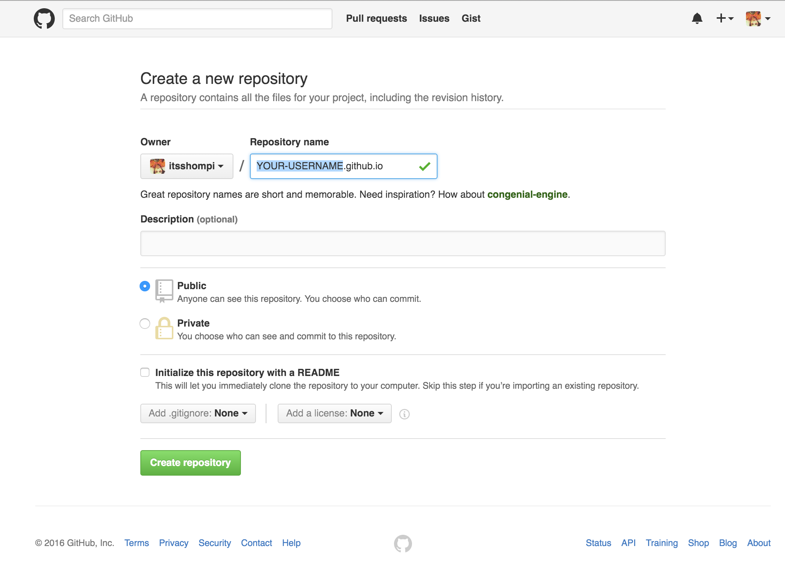
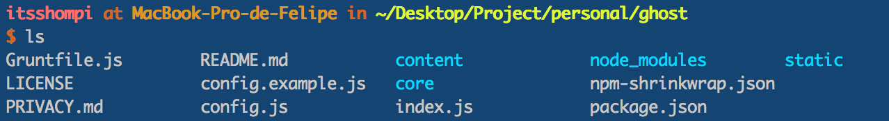
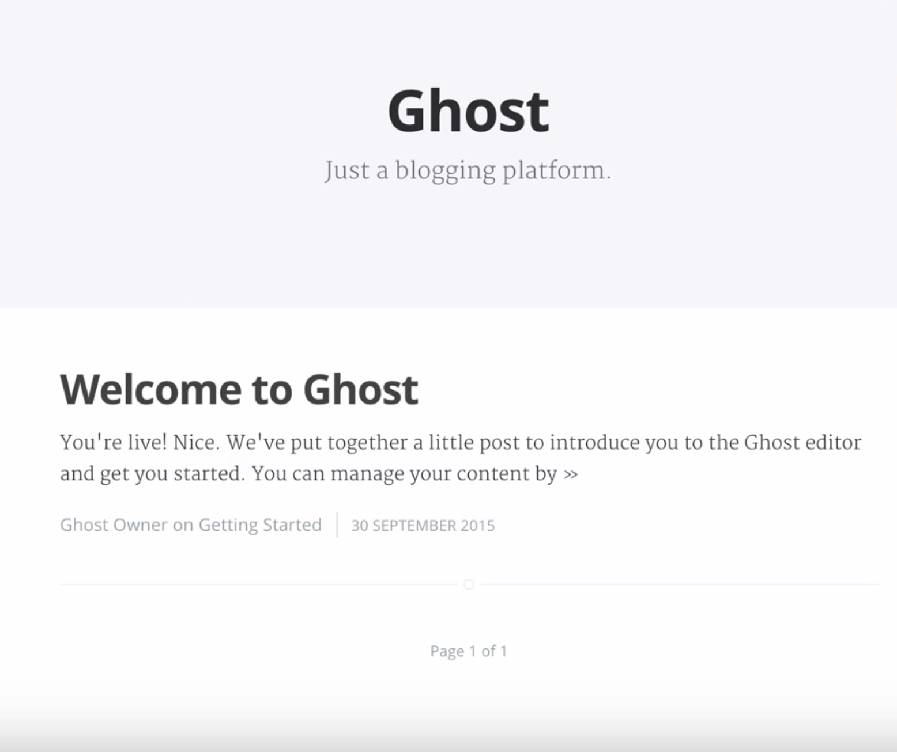

Despliega tu Blog con Ghost en Github Pages (Spanish Version)
Requisitos:
- Node instalado con nvm para cambiar de version.
- Tener instalado Buster
pip install Buster - Cuenta en Github
Lo primero que necesitamos para crear un blog es crear una cuenta en Ghost.
Luego podemos descargar Ghost en el siguiente link => Descarga Ghost.
Se descomprime el archivo y luego se accede a la ruta desde la terminal.
Cuando estemos en la ruta de la carpeta de ghost, procedemos a instalarlo con el siguiente comando:
npm install --production
Esperamos que termine el proceso de instalación para luego poder ejecutar el siguiente comando:
npm start
Luego de esto podemos acceder a nuestro blog en la siguiente URL:
http://localhost:2368
Para poder acceder a la administración de nuestro blog, necesitamos configurar la cuenta inicial en la siguiente URL:
http://localhost:2368/ghost
Luego de tener configurada la cuenta de administrador en Ghost podemos crear nuevos post y configurar Ghost a tu gusto.
Para poder subir este blog a GitHub Pages debemos crear un nuevo repositorio. Crear Repositorio

Es importante que el nombre de el repositorio sea:
tu-nombre-de-usuario.github.io
En mi caso, mi nombre de usuario es itsshompi, por lo cual mi repositorio tiene como nombre itsshompi.github.io
Luego de esto nos situamos en la carpeta de Ghost desde la terminal y ejecutamos el comando.
buster generate
Con esto se crea una carpeta llamada static

Dentro de la carpeta static necesitamos ejecutar los siguientes comandos para poder desplegar nuestra pagina en GitHub Pages:
git init // para iniciar git
git add -A // para añadir los archivos a nuestro commit
git commit -m "Iniciando mi Blog" // Para crear el comit
git remote add origin https://github.com/tu-nombre-de-usuario/tu-nombre-de-usuario.github.io.git
git push origin master //para subir a github
Con esto ya tenemos nuestro blog en GitHub Pages y podemos acceder a https://tu-nombre-de-usuario.github.io, para verificar que todo este bien.
Tendriamos que ver algo parecido a esto:

Con esto ya tenemos nuestro Blog desplegado en GitHub Pages.
Para crear nuevas entradas en Ghost y desplegarlas en GitHub Pages, tenemos que hacer lo siguiente:
- Crear la nueva entrada en el entorno local
- Ejecutar buster nuevamente
buster generate - Crear un commit
git add -A&git commit -m 'Nueva Entrada' - Subir los cambios a GitHub
git push origin master
NOTA: En algunos casos los cambios se demoran entre 3 a 5 minutos.
Si te ha gustado éste artículo, puedes compartirlo para que otros puedan leerlo.